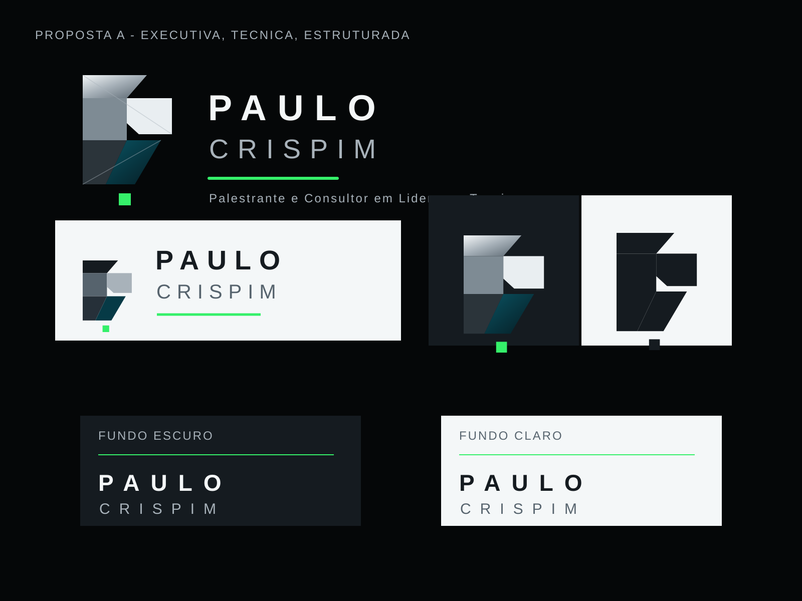

Proposta A
Executiva, técnica, estruturada e precisa.

Conceito
O símbolo é um monograma abstrato construído por planos geométricos. A sensação é de engenharia, método, estrutura e precisão. O ponto verde funciona como energia controlada, indicando foco e avanço.
Relação estratégica
| Tema | Leitura |
|---|---|
| Palestras | Transmite autoridade para ambientes empresariais e eventos técnicos. |
| Engenharia | Os planos e cortes remetem a projeto, estrutura, cálculo e método. |
| Paleta | Preto, grafite e petróleo sustentam profundidade; verde marca direção. |
| Tipografia | Sem serifa, espaçada, corporativa e de leitura limpa. |
Aplicações, limitações e cuidados
Funciona bem em cabeçalho institucional, capa de apresentação, cartão digital e materiais corporativos. Deve evitar redução extrema com o nome completo. A versão reduzida usa apenas o símbolo. Não aplicar efeitos 3D adicionais nem transformar o verde em cor dominante.